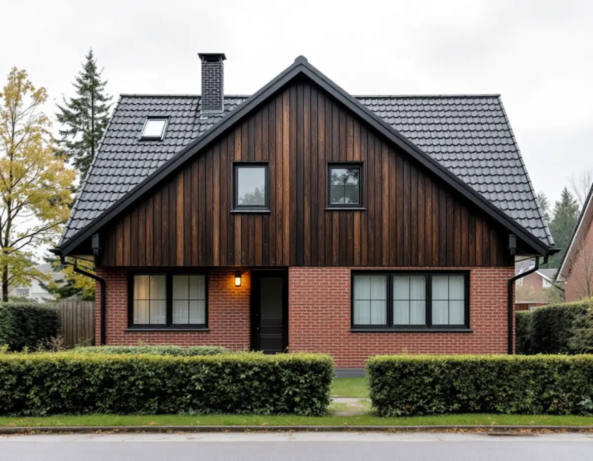
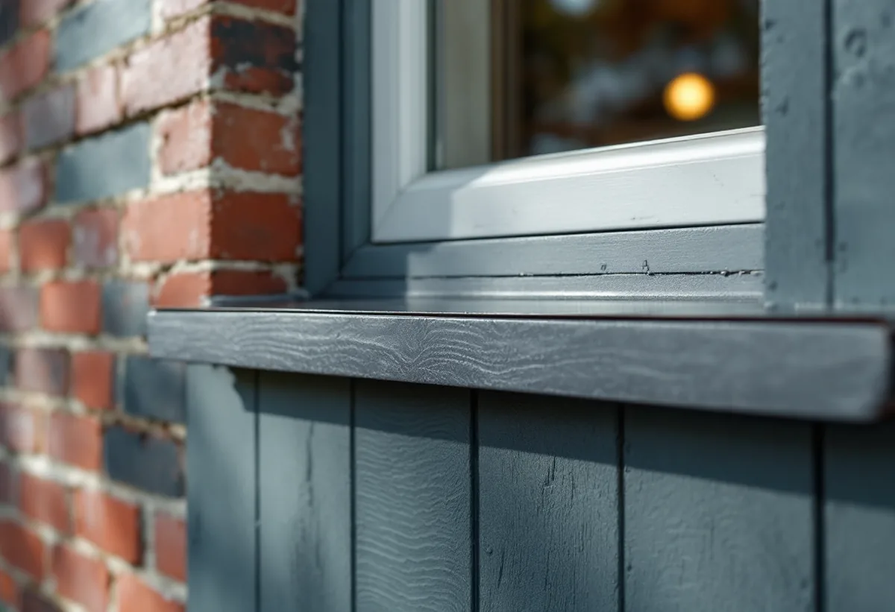

Genomgång av fasaden
Tegel, fogar, panel, sockel och bleck kontrolleras var för sig, och vi petar i ändträ och nedre brädor.
Många Täbyhus från efterkrigstiden har flera fasadmaterial på samma vägg: tegel i bottenvåningen, målad panel i gaveln och en putsad sockel under. Geal Entreprenad AB renoverar fasader i hela Täby, från tegelvillor till kedjehus, och samordnar murning, snickeri, plåt och målning. Platsbesöket är gratis och du får ett skriftligt kostnadsförslag.

Kommunens kulturmiljöunderlag Kulturmiljöer i Täby visar hur blandade fasaderna är. Vid östra delen av Hjortvägen står villor från 1950- och 1960-talet i en eller två våningar, med fasader av rött eller gult tegel och grå putsad sockel. Underlaget beskriver en hög andel bevarade ursprungliga material och detaljer, och rådet för området är att behålla tegelfasader, fönstersnickerier, entrépartier och nätta takutsprång.
Kvarteret Hägern i Näsbygård byggdes 1975–1976 som kedjehus med bottenvåning i fasadtegel, småspröjsade fönster med brunsvarta snickerier och gavlar i brun-, röd- eller grönmålad träpanel. Underlaget visar också två hus från 1968 där bottenvåningen har tegel men träpanel under fönstren.
I Norskogen, med elementhus från 1958–1959, sitter fönstren i stället i liv med en fasad av finprofilerad aluminiumplåt. Tre material som åldras på var sitt sätt, och som därför renoveras på var sitt sätt.

Ett murat tegelskikt håller länge, men fogarna och anslutningarna åldras fortare. Boverket skriver att anslutningar mot fönster och dörrar och infästningar för till exempel stuprör behöver tätning i mer än en nivå, så kallad tvåstegstätning, när de utsätts för slagregn. På Täbys blandfasader finns sådana anslutningar överallt: där panelen börjar ovanför teglet, under fönsterbänkarna och kring bleck.
Det är också där skadorna brukar sitta. Panel som slutar för nära tegelkrönet suger vatten i ändträet, och ett fönsterbleck med för liten lutning leder vatten in mot fogen i stället för ut. Vi byter de skadade brädorna mot samma profil, ser över bleck och droppkanter och lagar fogarna i teglet med ett bruk som passar stenen.
Teglet i sig ska sällan målas eller putsas över. Underlaget räknar tegelfasaderna vid Hjortvägen till det som ska behållas, och för grupphusområdena gäller att undvika stora kontraster i material och färg. Panelen och snickerierna runt omkring målas, och mer om det finns hos målare i Täby.
I de generella råden för småhusområden skriver kommunen att fönstren vid tilläggsisolering av fasad bör flyttas ut, så att de sitter i samma förhållande till fasaden som tidigare, och att takfoten kanske också behöver förlängas. Boverket beskriver samma problem: en tjockare vägg gör att fönstren hamnar längre in och takfoten skjuter ut mindre.
På ett hus med tegel nedtill är det sällan aktuellt att isolera utanpå teglet. Den panelade gaveln eller panelpartiet under fönstren kan däremot få tjockare isolering när panelen ändå byts, och enligt Boverket är det då tilläggsisoleringen brukar bli mest lönsam. Isoleras väggen invändigt i stället blir teglet kallare, och då ökar risken för frostsprängning. Fönstren behöver inte heller bytas för att huset ska bli varmare: kommunens råd är att äldre fönster av hög kvalitet ofta är värda att underhålla och eventuellt kan kompletteras med invändigt energiglas.
Underlaget visar också hur stor förändringen kan bli. Punkthusen i kvarteret Höstfibblan hade ursprungligen putsade fasader men är i dag tilläggsisolerade och klädda med ljust gul plåt. På en villa i ett enhetligt grupphusområde syns en motsvarande skillnad tydligt mot grannarna. Läs mer om puts, panel och isolering under fasadrenovering.
Täby kommun skriver att det inte behövs bygglov för fasadändringar på en- och tvåbostadshus, om byggnaden inte är särskilt värdefull, inte ligger i ett särskilt värdefullt område och inte har utökad lovplikt i detaljplanen. Den som är osäker på vad som gäller för sin fastighet kan få rådgivning av kommunen.
Även utan lov är kulturmiljöunderlagets riktlinjer värda att följa. För grupphusområdena säger de att ursprunglig färgsättning och ursprungliga fönsterformat ska behållas och att bebyggelsens arkitektoniska uttryck ska vara vägledande vid om- och tillbyggnader. Kommunen råder dessutom fastighetsägare att ta fram husets ritningar och fråga efter äldre handlingar, eftersom många hus har byggts till genom åren.
Tegel, fogar, panel, sockel och bleck kontrolleras var för sig, och vi petar i ändträ och nedre brädor.
Vi tittar på husets ritningar och på vad kulturmiljöunderlaget säger om området innan material väljs.
Ett skriftligt förslag där murning, panelbyte, isolering och målning redovisas som separata poster.
Ställning byggs, tegel och fönster täcks och skadad panel rivs.
Fogar lagas, ny isolering och panel monteras och bleck görs om med tvåstegstätning vid anslutningarna.
Panel och snickerier målas och vi kontrollerar anslutningarna tillsammans med dig.
Skatteverkets lista över godkända arbeten i småhus tar med att mura och reparera fasader, byta och reparera fasader, tilläggsisolera och måla fasader. Du får 30 procent av arbetskostnaden i avdrag, högst 50 000 kr per person och år, och rot och rut får tillsammans uppgå till högst 75 000 kr.
Bor du i ett radhus som är en bostadsrätt ger fasadarbeten inget rotavdrag, eftersom fasaden räknas som en gemensam yta. Geal drar avdraget direkt på fakturan.
Hur mycket av fogarna i teglet som behöver lagas, hur stor andel av panelen som byts, om fönstren ska flyttas ut vid tilläggsisolering och hur många bleck och anslutningar som måste göras om. Ett tvåplanshus behöver mer ställning än en envåningsvilla. Du får ett skriftligt kostnadsförslag efter ett platsbesök som inte kostar något.
Puts, panel och tilläggsisolering.
Fasadrenovering i Stockholm →Takbyte, takbesiktning och plåtarbeten.
Takläggare i Täby →Näsbypark, Viggbyholm och Gribbylund.
Takrenovering i Täby →Panel, snickerier och fönster.
Målare i Täby →Fönster, verandor och carport.
Snickare i Täby →Nya golv och slipning.
Golvläggare i Täby →Villastäder och grupphus i Täby.
Fönsterbyte i Täby →Stationsvillor, funkis och grupphus i Täby.
Plåtslagare i Täby →Betongpannor, kedjehus och tegelvillor.
Takbyte i Täby →Byle, kyrkbyn och detaljplanen.
Tillbyggnad i Täby →